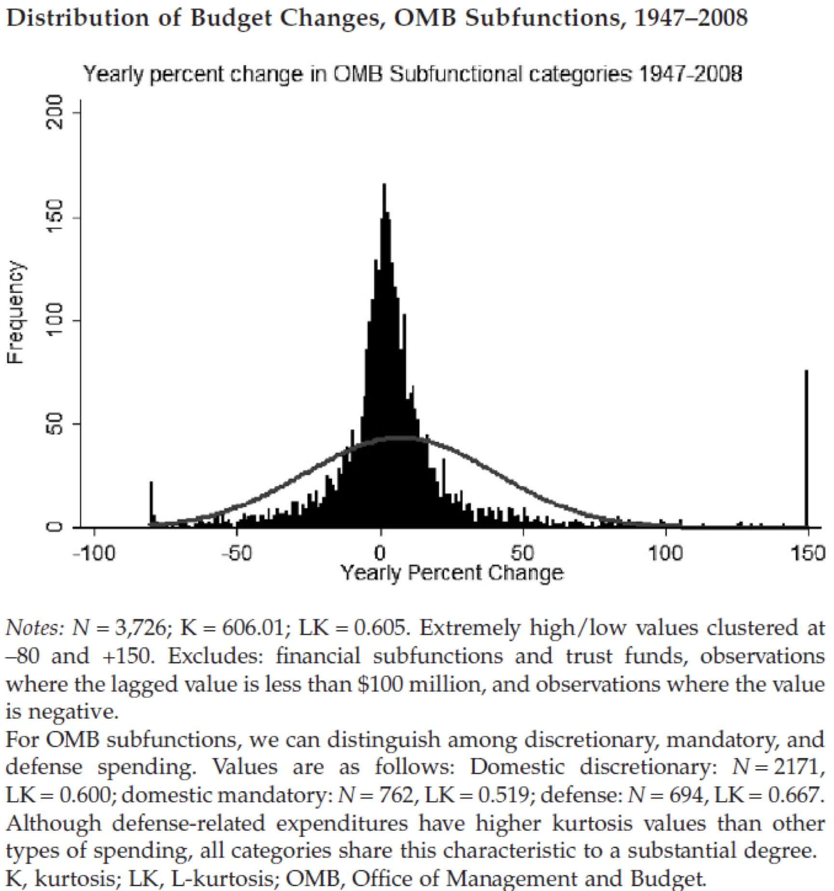
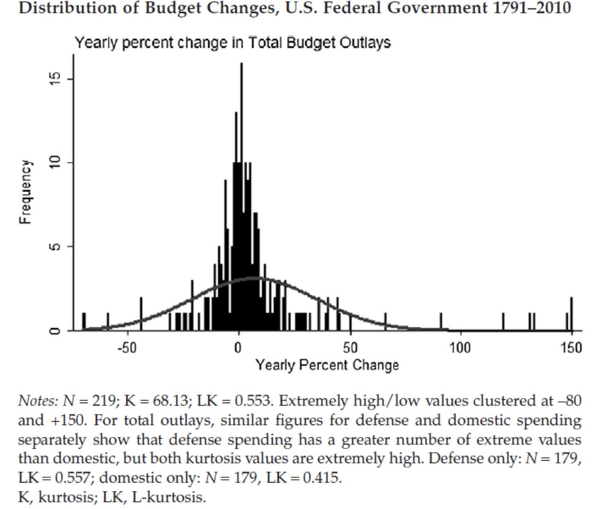
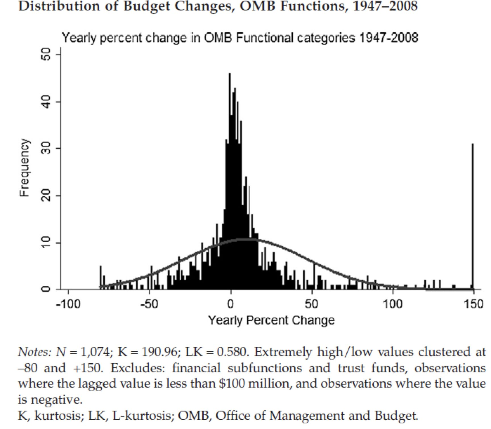

收录于合集
文献来源：Baumgartner, Frank R. “Ideas and Policy Change.“Governance 26.2(2013):239-258.
作者介绍：Frank Baumgartner，北卡大学教堂山分校政治学教授，研究方向为公共政策及其变迁，因将“断续均衡”理论运用于美国公共政策分析而著名，著有《美国政治中的议程与不稳定性》。
1993年，彼得·霍尔（Peter Hall）的名篇《政策范式、社会学习与国家》（“Paradigms,Social Learning, and the State”）问世，深刻地影响了后世的政策研究与制度分析。20年后，Governance杂志组织专家学者再次讨论了这篇经典文献，本期推送的文章就是Baumgartner对Hall 1993的评论与补充。作者大致认同Hall的主要观点，但认为Hall独创的三级政策变迁序列可以整合为统一的“断续均衡”范式。对此，各位读者怎么看呢？
政策变迁的实质
Hall认为，在面对各持己见的专家时，政治家将何种意见视为权威直接决定了政策的走向。因此，政策变迁的实质就是观念和权威的转移。在大多数时候，人们的观念都倾向于维持现状，因此政策常常只发生细节性的调整。但也有一些时候，当前政策及其背后的观念会在现实中遭遇严重失败，那么剧变就会随之而来。Baumgartner的分析可谓和Hall殊途同归，他认为，政策变迁实际上就是政策形象（即政策如何被看待）和政治议定场所的互动。当政策遭遇失败时，政策形象就会受损，那么政治议定场所的合法性就会受到质疑，最终政治议定场所的权力就可能转移到别处，从而导致政策变迁。在现实中，根本性的变迁是罕见的，但往往会造成惊人的后果甚至是连锁反应。当人们适应这种变化时，政策又会进入新的稳定的均衡。这种长期稳定和剧烈变迁共存的情况被政治学家称为“断续均衡”（一般认为是Krasner从古生物学界引入了这一概念）。Baumgartner给出了美国预算变迁的例子：下图统计了美国政府管理预算局所有小类预算的年度百分比变化情况，不难发现，绝大多数预算调整都集中在-5%到15%的区间内，频率分布呈现出一定的正态特征。然而，该图在左右两端的极值上的分布确没有趋近于零，呈现出明显的“肥尾效应”，可见政策的剧变是真实存在而不容忽视的。

政策变迁的层级序列
Hall认为，在政策研究中，有三个变量不容忽视，即某领域政策所要实现的总体性目标（如缓解老年人经济压力）、实现该目标所采取的手段或政策工具（如养老金）和对这些工具的精确设置（如养老金的数额）。与这三个变量对应的，政策变迁可以分为三级序列：第一序列即对政策工具精确设置的常规调整，第二序列则是更换政策工具，第三序列则是总体性目标的改变及其引发的根本性政策变迁。Hall强调，第一、二序列的政策变迁都是频繁而细微的，但第三序列的变迁总是罕见而剧烈的，因为其往往意味着根本性的政策失败。第一、二序列的变迁无法自动累加为第三序列变迁。
在这方面，Baumgartner的观点有所不同。他认为，三级序列的划分虽然细致，但难免复杂。事实上，不同层级的政策变迁都可以归纳为“断续均衡”。只要现状被认为仍然是可以接受的，政策变迁就是细节性的。而当政策被视为失败时，剧烈变迁就具备了基础。对此，Baumgartner给出了不同层级预算变迁的证据（即美国总预算、大类预算和小类预算）。结果如下图所示，总预算、大类预算和上文中的小类预算一样，其频率分布都具备正态集中和肥尾效应的特点。


观念与现状
Hall和Baumgartner都认为，人们对于政策变迁的风险非常敏感，因此维持现状的心理动机是非常强大的，观念因此具有了“粘性”。事实上，政策变迁似乎有很多的必要条件，却很难找到它的充分条件。即使政策遭遇挫折，当局也会想方设法将其辩护为“还不够好”及“仍需调整”。即使当局已经承认了政策的彻底失败，也不一定能有新的观念和政策进入备选方案。政策失败确实为政策变迁提供机遇窗口，但现实中政策剧变仍然十分罕见。与此同时，政策变迁也不一定依赖于政策的明显失败。专家团队的更新换代、学科工具的最新发展都有可能促进观念转变，进而导致能动者对现状的不满，最终推动政策变迁。可见，在政策变迁的过程中，观念（也即对现状的看法）始终居于核心地位。政策是否变迁、在什么程度上发生变迁取决于现状是否被视为糟糕以及有多糟糕。
推荐阅读
Hall, P. A.(1993). Policy paradigms, social learning, and the state: the case of economicpolicymaking in Britain. Comparative Politics, 25 (3), 275-296.
Hall, P. A. (2013). Brother, can you paradigm? Governance , 26(2), 189-192
Krasner, S.D. (1984). Approaches to the state: alternative conceptions and historicaldynamics. Comparative Politics, 16 (2), 223-246.
Krasner, S.D. (1988). Sovereignty: an institutional perspective. Comparative PoliticalStudies, 21 (1), 66-94.
Tang, S.(2012). A General Theory of Institutional Change. London: Routledge.
请支持我们的苹果用户请长按识别二维码赞赏
政观编辑部